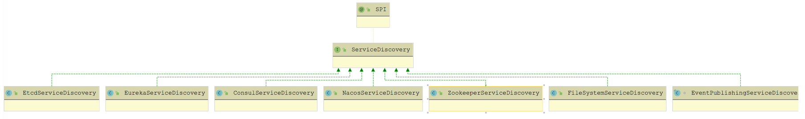
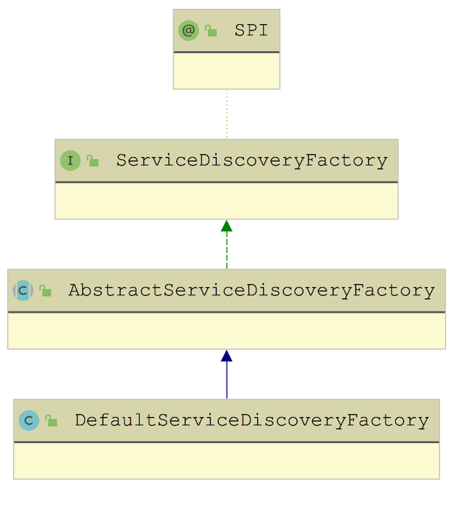
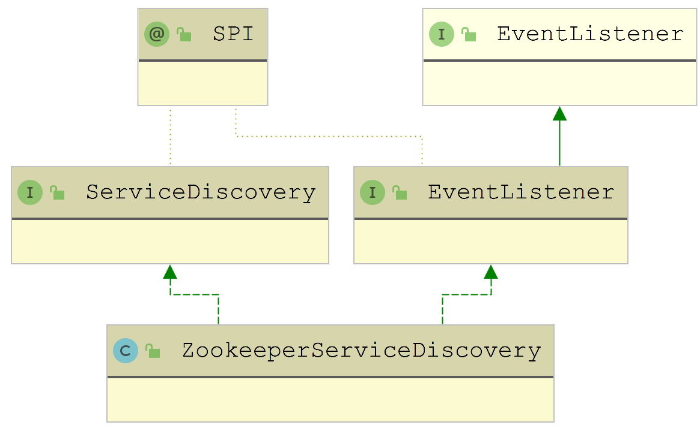
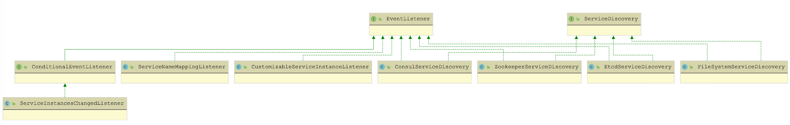
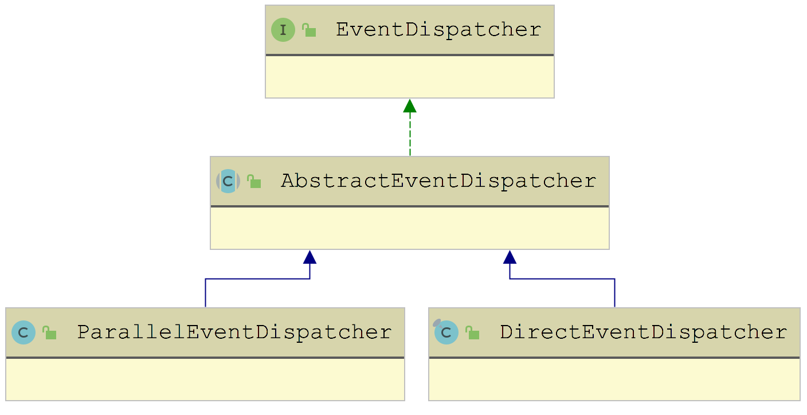
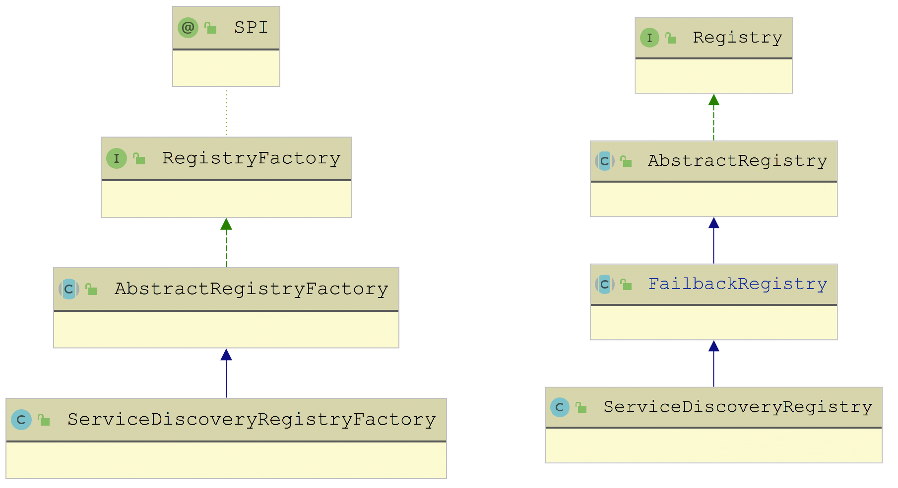
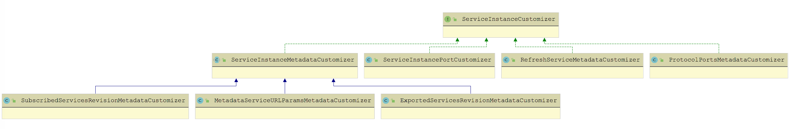
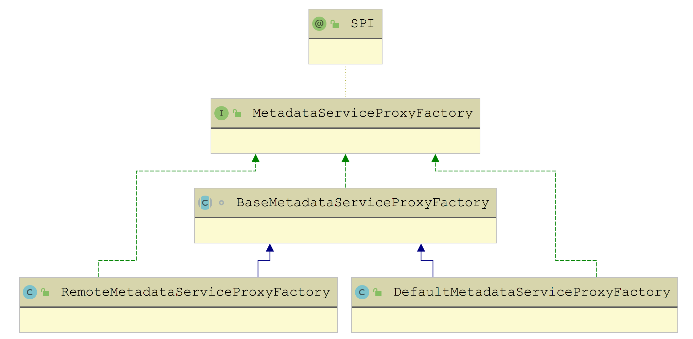
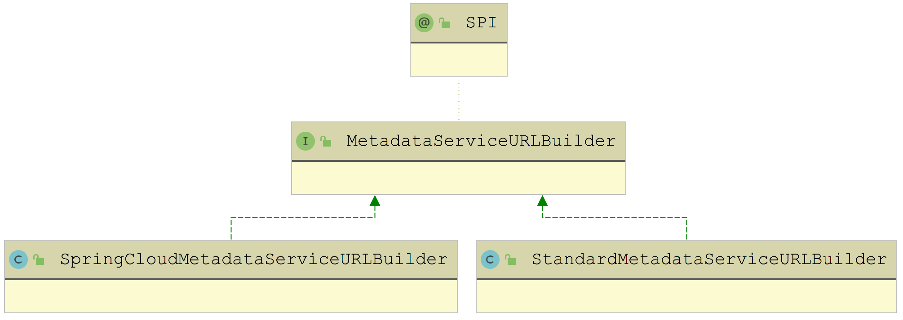
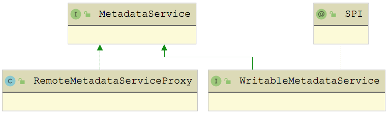

Dubbo 中服务实例的发布与订阅功能的具体实现：
首先，我会对 ServiceDiscovery 接口的核心定义进行讲解；
然后，我会重点介绍以 ZooKeeper 为注册中心的 ZookeeperServiceDiscovery 实现，这其中还会涉及相关事件监听的实现。
ServiceDiscovery 主要封装了针对 ServiceInstance 的发布和订阅操作，可以暂时将其理解成一个 ServiceInstance 的注册中心。ServiceDiscovery 接口的定义如下所示：
x1// ServiceDiscovery.java2
3("zookeeper")4public interface ServiceDiscovery extends Prioritized {5
6 // 初始化当前ServiceDiscovery实例，传入的是注册中心的URL7 void initialize(URL registryURL) throws Exception;8
9 // 销毁当前ServiceDiscovery实例10 void destroy() throws Exception;11
12 // 发布传入的ServiceInstance实例13 void register(ServiceInstance serviceInstance) throws RuntimeException;14
15 // 更新传入的ServiceInstance实例16 void update(ServiceInstance serviceInstance) throws RuntimeException;17
18 // 注销传入的ServiceInstance实例19 void unregister(ServiceInstance serviceInstance) throws RuntimeException;20
21 // 查询全部Service Name22 Set<String> getServices();23
24 // 分页查询时默认每页的条数25 default int getDefaultPageSize() {26 return 100;27 }28
29 // 根据ServiceName分页查询ServiceInstance30 default List<ServiceInstance> getInstances(String serviceName) throws NullPointerException {31 List<ServiceInstance> allInstances = new LinkedList<>();32 int offset = 0;33 int pageSize = getDefaultPageSize();34 // 分页查询ServiceInstance35 Page<ServiceInstance> page = getInstances(serviceName, offset, pageSize);36 allInstances.addAll(page.getData());37 while (page.hasNext()) {38 offset += page.getDataSize();39 page = getInstances(serviceName, offset, pageSize);40 allInstances.addAll(page.getData());41 }42 return unmodifiableList(allInstances);43 }44
45 default Page<ServiceInstance> getInstances(String serviceName, int offset, int pageSize) throws NullPointerException,46 IllegalArgumentException {47 return getInstances(serviceName, offset, pageSize, false);48 }49
50 default Page<ServiceInstance> getInstances(String serviceName, int offset, int pageSize, boolean healthyOnly) throws51 NullPointerException, IllegalArgumentException, UnsupportedOperationException {52 throw new UnsupportedOperationException("Current implementation does not support pagination query method.");53 }54
55 default Map<String, Page<ServiceInstance>> getInstances(Iterable<String> serviceNames, int offset, int requestSize) throws56 NullPointerException, IllegalArgumentException {57 Map<String, Page<ServiceInstance>> instances = new LinkedHashMap<>();58 for (String serviceName : serviceNames) {59 instances.put(serviceName, getInstances(serviceName, offset, requestSize));60 }61 return unmodifiableMap(instances);62 }63
64 // 添加ServiceInstance监听器65 default void addServiceInstancesChangedListener(ServiceInstancesChangedListener listener)66 throws NullPointerException, IllegalArgumentException {67 }68
69 // 触发ServiceInstancesChangedEvent事件70 default void dispatchServiceInstancesChangedEvent(String serviceName) {71 dispatchServiceInstancesChangedEvent(serviceName, getInstances(serviceName));72 }73
74 default void dispatchServiceInstancesChangedEvent(String serviceName, String... otherServiceNames) {75 dispatchServiceInstancesChangedEvent(serviceName, getInstances(serviceName));76 if (otherServiceNames != null) {77 Stream.of(otherServiceNames)78 .filter(StringUtils::isNotEmpty)79 .forEach(this::dispatchServiceInstancesChangedEvent);80 }81 }82
83 default void dispatchServiceInstancesChangedEvent(String serviceName, Collection<ServiceInstance> serviceInstances) {84 dispatchServiceInstancesChangedEvent(new ServiceInstancesChangedEvent(serviceName, serviceInstances));85 }86
87 default void dispatchServiceInstancesChangedEvent(ServiceInstancesChangedEvent event) {88 getDefaultExtension().dispatch(event);89 }90}ServiceDiscovery接口被 @SPI 注解修饰，是一个扩展点，针对不同的注册中心，有不同的 ServiceDiscovery 实现，如下图所示：

在 Dubbo 创建 ServiceDiscovery 对象的时候，会通过 ServiceDiscoveryFactory 工厂类进行创建。
ServiceDiscoveryFactory 接口也是一个扩展接口，Dubbo 只提供了一个默认实现—— DefaultServiceDiscoveryFactory，其继承关系如下图所示：

在 AbstractServiceDiscoveryFactory 中维护了一个 ConcurrentMap 类型的集合（discoveries 字段）来缓存 ServiceDiscovery 对象，并提供了一个 createDiscovery() 抽象方法来创建 ServiceDiscovery 实例。
61// AbstractServiceDiscoveryFactory.java2
3public ServiceDiscovery getServiceDiscovery(URL registryURL) {4 String key = registryURL.toServiceStringWithoutResolving();5 return discoveries.computeIfAbsent(key, k -> createDiscovery(registryURL));6}在 DefaultServiceDiscoveryFactory 中会实现 createDiscovery() 方法，使用 Dubbo SPI 机制获取对应的 ServiceDiscovery 对象，具体实现如下：
71// DefaultServiceDiscoveryFactory.java2
3protected ServiceDiscovery createDiscovery(URL registryURL) {4 String protocol = registryURL.getProtocol();5 ExtensionLoader<ServiceDiscovery> loader = getExtensionLoader(ServiceDiscovery.class);6 return loader.getExtension(protocol);7}Dubbo 提供了多个 ServiceDiscovery 用来接入多种注册中心，以ZookeeperServiceDiscovery为例介绍 Dubbo 是如何接入 ZooKeeper 作为注册中心，实现服务实例发布和订阅的。
在 ZookeeperServiceDiscovery 中封装了一个 Apache Curator 中的 ServiceDiscovery 对象来实现与 ZooKeeper 的交互 。在 initialize() 方法中会初始化 CuratorFramework 以及 Curator ServiceDiscovery 对象，如下所示：
161// ZookeeperServiceDiscovery.java2
3 public void initialize(URL registryURL) throws Exception {4 // ...省略初始化EventDispatcher的相关逻辑5
6 // 初始化CuratorFramework7 this.curatorFramework = buildCuratorFramework(registryURL);8
9 // 确定rootPath，默认是"/services"10 this.rootPath = ROOT_PATH.getParameterValue(registryURL);11
12 // 初始化Curator ServiceDiscovery并启动13 this.serviceDiscovery = buildServiceDiscovery(curatorFramework, rootPath);14
15 this.serviceDiscovery.start();16}在 ZookeeperServiceDiscovery 中的方法基本都是调用 Curator ServiceDiscovery 对象的相应方法实现，例如，register()、update() 、unregister() 方法都会调用 Curator ServiceDiscovery 对象的相应方法完成 ServiceInstance 的添加、更新和删除。比如register方法：
291// ZookeeperServiceDiscovery.java2
3public void register(ServiceInstance serviceInstance) throws RuntimeException {4 doInServiceRegistry(serviceDiscovery -> {5 serviceDiscovery.registerService(build(serviceInstance));6 });7}8// 在build()方法中会将Dubbo中的ServiceInstance对象转换成Curator中的ServiceInstance对象9public static org.apache.curator.x.discovery.ServiceInstance<ZookeeperInstance> build(ServiceInstance serviceInstance) {10 ServiceInstanceBuilder builder = null;11
12 // 获取Service Name13 String serviceName = serviceInstance.getServiceName();14
15 String host = serviceInstance.getHost();16 int port = serviceInstance.getPort();17
18 // 获取元数据19 Map<String, String> metadata = serviceInstance.getMetadata();20
21 // 生成的id格式是"host:ip"22 String id = generateId(host, port);23
24 // ZookeeperInstance是Curator ServiceInstance的payload25 ZookeeperInstance zookeeperInstance = new ZookeeperInstance(null, serviceName, metadata);26 builder = builder().id(id).name(serviceName).address(host).port(port)27 .payload(zookeeperInstance);28 return builder.build();29}除了上述服务实例发布的功能之外，在服务实例订阅的时候，还会用到 ZookeeperServiceDiscovery 查询服务实例的信息，这些方法都是直接依赖 Apache Curator 实现的，例如，getServices() 方法会调用 Curator ServiceDiscovery 的 queryForNames() 方法查询 Service Name，getInstances() 方法会通过 Curator ServiceDiscovery 的 queryForInstances() 方法查询 Service Instance。
ZookeeperServiceDiscovery 除了实现了 ServiceDiscovery 接口之外，还实现了 EventListener 接口，如下图所示：

也就是说ZookeeperServiceDiscovery 本身也是 EventListener 实现，可以作为 EventListener 监听某些事件 。
先来看 Dubbo 中 EventListener 接口的定义，其中关注三个方法：onEvent() 方法、getPriority() 方法和 findEventType() 工具方法。
321// EventListener.java2
3public interface EventListener<E extends Event> extends java.util.EventListener, Prioritized {6 // 当发生该EventListener对象关注的事件时，该EventListener的onEvent()方法会被调用7 void onEvent(E event); 8 // 当前EventListener对象被调用的优先级9 default int getPriority() { 10 return MIN_PRIORITY;11 }12 // 获取传入的EventListener对象监听何种Event事件13 static Class<? extends Event> findEventType(EventListener<?> listener) {14 return findEventType(listener.getClass());15 }16
17 static Class<? extends Event> findEventType(Class<?> listenerClass) {18 Class<? extends Event> eventType = null;19 // 检测传入listenerClass是否为Dubbo的EventListener接口实现20 if (listenerClass != null && EventListener.class.isAssignableFrom(listenerClass)) {21 eventType = findParameterizedTypes(listenerClass)22 .stream()23 .map(EventListener::findEventType) // 获取listenerClass中定义的Event泛型24 .filter(Objects::nonNull)25 .findAny()26 // 获取listenerClass父类中定义的Event泛型27 .orElse((Class) findEventType(listenerClass.getSuperclass()));28 }29 return eventType;30 }31 // ...findEventType()方法用来过滤传入的parameterizedType是否为Event或Event子类(这里省略该方法的实现)32}Dubbo 中有很多 EventListener 接口的实现，如下图所示：

重点关注ZookeeperServiceDiscovery#onZevenet方法、以及 addServiceInstancesChangedListener() 方法。中会调用 registerServiceWatcher() 方法重新注册：
181// ZookeeerServiceDiscovery.java2
3public void onEvent(ServiceInstancesChangedEvent event) {4 // 发生ServiceInstancesChangedEvent事件的Service Name5 String serviceName = event.getServiceName();6 // 重新注册监听器7 registerServiceWatcher(serviceName);8}9protected void registerServiceWatcher(String serviceName) {10 // 构造要监听的path11 String path = buildServicePath(serviceName);12 // 创建监听器ZookeeperServiceDiscoveryChangeWatcher并记录到watcherCaches缓存中13 CuratorWatcher watcher = watcherCaches.computeIfAbsent(path, key ->14 new ZookeeperServiceDiscoveryChangeWatcher(this, serviceName));15 // 在path上添加上面构造的ZookeeperServiceDiscoveryChangeWatcher监听器，16 // 来监听子节点的变化17 curatorFramework.getChildren().usingWatcher(watcher).forPath(path);18}ZookeeperServiceDiscoveryChangeWatcher 是 ZookeeperServiceDiscovery 配套的 CuratorWatcher 实现 ，其中 process() 方法实现会关注 NodeChildrenChanged 事件和 NodeDataChanged 事件，并调用关联的 ZookeeperServiceDiscovery 对象的 dispatchServiceInstancesChangedEvent() 方法，具体实现如下：
111// ZookeeperServiceDiscoveryChangeWatcher.java2
3public void process(WatchedEvent event) throws Exception {4 // 获取监听到的事件类型5 Watcher.Event.EventType eventType = event.getType();6 // 这里只关注NodeChildrenChanged和NodeDataChanged两种事件类型7 if (NodeChildrenChanged.equals(eventType) || NodeDataChanged.equals(eventType)) {8 // 调用dispatchServiceInstancesChangedEvent()方法，分发ServiceInstancesChangedEvent事件9 zookeeperServiceDiscovery.dispatchServiceInstancesChangedEvent(serviceName);10 }11}通过上面的分析我们可以知道，ZookeeperServiceDiscoveryChangeWatcher 的核心就是将 ZooKeeper 中的事件转换成了 Dubbo 内部的 ServiceInstancesChangedEvent 事件。
通过上面对 ZookeeperServiceDiscovery 实现的分析我们知道，它并没有对 dispatchServiceInstancesChangedEvent() 方法进行覆盖，那么在 ZookeeperServiceDiscoveryChangeWatcher 中调用的 dispatchServiceInstancesChangedEvent() 方法就是 ServiceDiscovery 接口中的默认实现。在该默认实现中，会通过 Dubbo SPI 获取 EventDispatcher 的默认实现，并分发 ServiceInstancesChangedEvent 事件，具体实现如下：
31default void dispatchServiceInstancesChangedEvent(ServiceInstancesChangedEvent event) {2 EventDispatcher.getDefaultExtension().dispatch(event);3}下面来看 EventDispatcher 接口的具体定义：
151("direct")2public interface EventDispatcher extends Listenable<EventListener<?>> {3 // 该线程池用于串行调用被触发的EventListener，也就是direct模式4 Executor DIRECT_EXECUTOR = Runnable::run;5 // 将被触发的事件分发给相应的EventListener对象6 void dispatch(Event event);7 // 获取direct模式中使用的线程池8 default Executor getExecutor() {9 return DIRECT_EXECUTOR;10 }11 // 工具方法，用于获取EventDispatcher接口的默认实现12 static EventDispatcher getDefaultExtension() {13 return ExtensionLoader.getExtensionLoader(EventDispatcher.class).getDefaultExtension();14 }15}EventDispatcher 接口被 @SPI 注解修饰，是一个扩展点，Dubbo 提供了两个具体实现——ParallelEventDispatcher 和 DirectEventDispatcher，如下图所示：

AbstractEventDispatcher：抽象实现类，包含2个核心字段：
listenersCache（ConcurrentMap）：用于记录监听各类型事件的 EventListener 集合。在 AbstractEventDispatcher 初始化时，会加载全部 EventListener 实现并调用 addEventListener() 方法添加到 listenersCache 集合中；
executor：该线程池在 AbstractEventDispatcher 的构造函数中初始化。在 AbstractEventDispatcher 收到相应事件时，由该线程池来触发对应的 EventListener 集合。
AbstractEventDispatcher 中的 addEventListener()、removeEventListener()、getAllEventListeners() 方法都是通过操作 listenersCache 集合实现的。
AbstractEventDispatcher#dispatch()方法，该方法会从listenersCache集合中过滤出符合条件的EventListener对象，并按照串行或是并行模式进行通知 。
301// AbstractEventDispatcher.java2public void dispatch(Event event) {4// 获取通知EventListener的线程池，默认为串行模式，也就是direct实现5Executor executor = getExecutor();6executor.execute(() -> {7sortedListeners(entry -> entry.getKey().isAssignableFrom(event.getClass()))8.forEach(listener -> {9if (listener instanceof ConditionalEventListener) { // 针对ConditionalEventListener的特殊处理10ConditionalEventListener predicateEventListener = (ConditionalEventListener) listener;11if (!predicateEventListener.accept(event)) {12return;13}14}15// 通知EventListener16listener.onEvent(event);17});18});19}20// 这里的sortedListeners方法会对listenerCache进行过滤和排序22protected Stream<EventListener> sortedListeners(Predicate<Map.Entry<Class<? extends Event>, List<EventListener>>> predicate) {23return listenersCache24.entrySet()25.stream()26.filter(predicate)27.map(Map.Entry::getValue)28.flatMap(Collection::stream)29.sorted();30}AbstractEventDispatcher已经实现了EventDispatcher分发Event事件、通知EventListener的核心逻辑，然后在 ParallelEventDispatcher 和 DirectEventDispatcher 确定是并行通知模式还是串行通知模式即可。
ParallelEventDispatcher中通知 EventListener 的线程池是 ForkJoinPool，也就是并行模式；
DirectEventDispatcher中使用的是 EventDispatcher.DIRECT_EXECUTOR 线程池，也就是串行模式。这两个 EventDispatcher 的具体实现比较简单，这里就不再赘述。
ZookeeperServiceDiscovery构造方法：中会获取默认的 EventDispatcher 实现对象，并调用 addEventListener() 方法将 ZookeeperServiceDiscovery 对象添加到 listenersCache 集合中监听 ServiceInstancesChangedEvent 事件。
ZookeeperServiceDiscovery 直接继承了 ServiceDiscovery 接口中 dispatchServiceInstancesChangedEvent() 方法的默认实现，并没有进行覆盖，在该方法中，会获取默认的 EventDispatcher 实现并调用 dispatch() 方法分发 ServiceInstancesChangedEvent 事件。
为了将 ServiceDiscovery 接口的功能与 Registry 融合，Dubbo 提供了一个 ServiceDiscoveryRegistry 实现 ，继承关系如下所示：

由上图我们可以看到：ServiceDiscoveryRegistryFactory（扩展名称是
service-discovery-registry）是 ServiceDiscoveryRegistry 对应的工厂类，继承了 AbstractRegistryFactory 提供的公共能力。ServiceDiscoveryRegistry 是一个面向服务实例（ServiceInstance）的注册中心实现 ，其底层依赖前面章节介绍的 ServiceDiscovery、WritableMetadataService 等组件。
ServiceDiscoveryRegistry 中的核心字段有如下几个。
serviceDiscovery（ServiceDiscovery 类型）：用于 ServiceInstance 的发布和订阅。
subscribedServices（Set 类型）：记录了当前订阅的服务名称。
serviceNameMapping（ServiceNameMapping 类型）：用于 Service ID 与 Service Name 之间的转换。
writableMetadataService（WritableMetadataService 类型）：用于发布和查询元数据。
registeredListeners（Set 类型）：记录了注册的 ServiceInstancesChangedListener 的唯一标识。
subscribedURLsSynthesizers（List 类型）：将 ServiceInstance 的信息与元数据进行合并，得到订阅服务的完整 URL。
191// ServiceDiscoveryRegistry.java 构造器2public ServiceDiscoveryRegistry(URL registryURL) {4// 初始化父类，其中包括FailbackRegistry中的时间轮和重试定时任务以及AbstractRegistry中的本地文件缓存等5super(registryURL);6// ---往下看---7// 初始化ServiceDiscovery对象8this.serviceDiscovery = createServiceDiscovery(registryURL);9// ---end---10// 从registryURL中解析出subscribed-services参数，并按照逗号切分，得到subscribedServices集合11this.subscribedServices = parseServices(registryURL.getParameter(SUBSCRIBED_SERVICE_NAMES_KEY));12// 获取DefaultServiceNameMapping对象13this.serviceNameMapping = ServiceNameMapping.getDefaultExtension();14// 初始化WritableMetadataService对象15String metadataStorageType = getMetadataStorageType(registryURL);16this.writableMetadataService = WritableMetadataService.getExtension(metadataStorageType);17// 获取目前支持的全部SubscribedURLsSynthesizer实现，并初始化18this.subscribedURLsSynthesizers = initSubscribedURLsSynthesizers();19}在 createServiceDiscovery() 方法中，不仅会加载 ServiceDiscovery 的相应实现，还会在外层添加 EventPublishingServiceDiscovery 装饰器，在 register()、initialize() 等方法前后触发相应的事件，具体实现如下：
151// ServiceDiscoveryRegistry.java2protected ServiceDiscovery createServiceDiscovery(URL registryURL) {4// 根据registryURL获取对应的ServiceDiscovery实现5ServiceDiscovery originalServiceDiscovery = getServiceDiscovery(registryURL);6// ServiceDiscovery外层添加一层EventPublishingServiceDiscovery修饰器，7// EventPublishingServiceDiscovery会在register()、initialize()等方法前后触发相应的事件，8// 例如，在register()方法的前后分别会触发ServiceInstancePreRegisteredEvent和ServiceInstanceRegisteredEvent9ServiceDiscovery serviceDiscovery = enhanceEventPublishing(originalServiceDiscovery);10execute(() -> { // 初始化ServiceDiscovery11serviceDiscovery.initialize(registryURL.addParameter(INTERFACE_KEY, ServiceDiscovery.class.getName())12.removeParameter(REGISTRY_TYPE_KEY));13});14return serviceDiscovery;15}
Registry 接口的核心是服务发布和订阅，ServiceDiscoveryRegistry 既然实现了 Registry 接口，必然也要实现了服务注册和发布的功能。
在 ServiceDiscoveryRegistry 的 register() 中，首先会检测待发布 URL 中的 side 参数，然后调用父类的 register() 方法。我们知道 FailbackRegistry.register() 方法会回调子类的 doRegister() 方法，而
ServiceDiscoveryRegistry.doRegister() 方法直接依赖 WritableMetadataService 的 exportURL() 方法，完成元数据的发布。
181// ServiceDiscoveryRegistry.java2
3public final void register(URL url) {4 if (!shouldRegister(url)) { // 检测URL中的side参数是否为provider5 return;6 }7 super.register(url);8}9
10public void doRegister(URL url) {12 // 将元数据发布到MetadataService13 if (writableMetadataService.exportURL(url)) {14 ... // 输出INFO日志15 } else {16 ... // 输出WARN日志17 }18}ServiceDiscoveryRegistry.subscribe() 方法的实现，其中也是首先会检测待发布 URL 中的 side 参数，然后调用父类的 subscribe() 方法。我们知道 FailbackRegistry.subscribe() 方法会回调子类的 doSubscribe() 方法。在 ServiceDiscoveryRegistry 的 doSubscribe() 方法中，会执行如下完整的订阅流程：
调用 WriteMetadataService.subscribeURL() 方法在 subscribedServiceURLs 集合中记录当前订阅的 URL；
通过订阅的 URL 获取 Service Name；
根据 Service Name 获取 ServiceInstance 集合；
根据 ServiceInstance 调用相应的 MetadataService 服务，获取元数据，其中涉及历史数据的清理和缓存更新等操作；
将 ServiceInstance 信息以及对应的元数据信息进行合并，得到完整的 URL；
触发 NotifyListener 监听器；
添加 ServiceInstancesChangedListener 监听器。
来看 ServiceDiscoveryRegistry.doSubscribe() 方法的具体实现：
131// ServiceDiscoveryRegistry.java2
3protected void subscribeURLs(URL url, NotifyListener listener) {4 // 记录该订阅的URL5 writableMetadataService.subscribeURL(url);6 // 获取订阅的Service Name7 Set<String> serviceNames = getServices(url);8 if (CollectionUtils.isEmpty(serviceNames)) {9 throw new IllegalStateException("...");10 }11 // 执行后续的订阅操作12 serviceNames.forEach(serviceName -> subscribeURLs(url, listener, serviceName));13}首先来看 getServices() 方法的具体实现：它会首先根据 subscribeURL 的 provided-by 参数值获取订阅的 Service Name 集合，如果获取失败，则根据 Service ID 获取对应的 Service Name 集合；如果此时依旧获取失败，则尝试从 registryURL 中的 subscribed-services 参数值获取 Service Name 集合。
211// ServiceDiscoveryRegistry.java getServices方法2
3protected Set<String> getServices(URL subscribedURL) {4 Set<String> subscribedServices = new LinkedHashSet<>();5 // 首先尝试从subscribeURL中获取provided-by参数值，其中封装了全部Service Name6 String serviceNames = subscribedURL.getParameter(PROVIDED_BY);7 if (StringUtils.isNotEmpty(serviceNames)) {8 // 解析provided-by参数值，得到全部的Service Name集合9 subscribedServices = parseServices(serviceNames);10 }11 if (isEmpty(subscribedServices)) { 12 // 如果没有指定provided-by参数，则尝试通过subscribedURL构造Service ID，13 // 然后通过ServiceNameMapping的get()方法查找Service Name14 subscribedServices = findMappedServices(subscribedURL);15 if (isEmpty(subscribedServices)) {16 // 如果subscribedServices依旧为空，则返回registryURL中的subscribed-services参数值17 subscribedServices = getSubscribedServices();18 }19 }20 return subscribedServices;21}subscribeURLs(url, listener, serviceName) 这个重载的具体实现，其中会根据 Service Name 从 ServiceDiscovery 中查找对应的 ServiceInstance 集合，以及注册ServiceInstancesChangedListener 监听。
151// ServiceDiscoveryRegistry.java2
3protected void subscribeURLs(URL url, NotifyListener listener, String serviceName) {4 // 根据Service Name获取ServiceInstance对象5 List<ServiceInstance> serviceInstances = serviceDiscovery.getInstances(serviceName);6 // 调用另一个subscribeURLs()方法重载7 subscribeURLs(url, listener, serviceName, serviceInstances);8 // 添加ServiceInstancesChangedListener监听器9 registerServiceInstancesChangedListener(url, new ServiceInstancesChangedListener(serviceName) {10 11 public void onEvent(ServiceInstancesChangedEvent event) {12 subscribeURLs(url, listener, event.getServiceName(), new ArrayList<>(event.getServiceInstances()));13 }14 });15}在 subscribeURLs(url, listener, serviceName, serviceInstances) 这个重载中，主要是根据前面获取的 ServiceInstance 实例集合，构造对应的、完整的 subscribedURL 集合，并触发传入的 NotifyListener 监听器，如下所示：
141// ServiceDiscoveryRegistry.java2
3protected void subscribeURLs(URL subscribedURL, NotifyListener listener, String serviceName,4 Collection<ServiceInstance> serviceInstances) {5 List<URL> subscribedURLs = new LinkedList<>();6 // 尝试通过MetadataService获取subscribedURL集合7 subscribedURLs.addAll(getExportedURLs(subscribedURL, serviceInstances));8 if (subscribedURLs.isEmpty()) { // 如果上面的尝试失败9 // 尝试通过SubscribedURLsSynthesizer获取subscribedURL集合10 subscribedURLs.addAll(synthesizeSubscribedURLs(subscribedURL, serviceInstances));11 }12 // 触发NotifyListener监听器13 listener.notify(subscribedURLs);14}这里构造完整 subscribedURL 可以分为两个分支。
第一个分支：结合传入的 subscribedURL 以及从元数据中获取每个 ServiceInstance 的对应参数，组装成每个 ServiceInstance 对应的完整 subscribeURL。 该部分实现在 getExportedURLs() 方法中，也是订阅操作的核心 ；
第二个分支：当上述操作无法获得完整的 subscribeURL 集合时，会使用 SubscribedURLsSynthesizer，基于 subscribedURL 拼凑出每个 ServiceInstance 对应的完整的 subscribedURL。 该部分实现在 synthesizeSubscribedURLs() 方法中，目前主要针对 rest 协议 。
getExportedURLs() 方法主要围绕 serviceRevisionExportedURLsCache 这个集合展开的，它是一个 Map > 类型的集合，其中第一层 Key 是 Service Name，第二层 Key 是 Revision，最终的 Value 值是 Service Name 对应的最新的 URL 集合。
清理过期 URL：在 getExportedURLs() 方法中，首先会调用 expungeStaleRevisionExportedURLs() 方法销毁全部已过期的 URL 信息，具体实现如下：
271// ServiceDiscoveryRegistry.java2
3private void expungeStaleRevisionExportedURLs(List<ServiceInstance> serviceInstances) {4 // 从第一个ServiceInstance即可获取Service Name5 String serviceName = serviceInstances.get(0).getServiceName();6 // 获取该Service Name当前在serviceRevisionExportedURLsCache中对应的URL集合7 Map<String, List<URL>> revisionExportedURLsMap = serviceRevisionExportedURLsCache8 .computeIfAbsent(serviceName, s -> new LinkedHashMap());9 if (revisionExportedURLsMap.isEmpty()) { // 没有缓存任何URL，则无须后续清理操作，直接返回即可10 return;11 }12
13 // 获取Service Name在serviceRevisionExportedURLsCache中缓存的修订版本14 Set<String> existedRevisions = revisionExportedURLsMap.keySet();15
16 // 从ServiceInstance中获取当前最新的修订版本17 Set<String> currentRevisions = serviceInstances.stream()18 .map(ServiceInstanceMetadataUtils::getExportedServicesRevision)19 .collect(Collectors.toSet());20
21 // 获取要删除的陈旧修订版本：staleRevisions = existedRevisions(copy) - currentRevisions22 Set<String> staleRevisions = new HashSet<>(existedRevisions);23 staleRevisions.removeAll(currentRevisions);24
25 // 从revisionExportedURLsMap中删除staleRevisions集合中所有Key对应的URL集合26 staleRevisions.forEach(revisionExportedURLsMap::remove);27}
看到这里是通过 ServiceInstanceMetadataUtils 工具类从每个 ServiceInstance 的 metadata 集合中获取最新的修订版本（Key 为 dubbo.exported-services.revision），那么该修订版本的信息是在哪里写入的呢？
来看一个新接口—— ServiceInstanceCustomizer，具体定义如下：
61// ServiceInstanceCustomizer.java2public interface ServiceInstanceCustomizer extends Prioritized {5void customize(ServiceInstance serviceInstance);6}
关于 ServiceInstanceCustomizer 接口，这里需要关注三个点：
该接口被 @SPI 注解修饰，是一个扩展点；
该接口继承了 Prioritized 接口；
该接口中定义的 customize() 方法可以用来自定义 ServiceInstance 信息，其中就包括控制 metadata 集合中的数据。
也就说， ServiceInstanceCustomizer 的多个实现可以按序调用，实现 ServiceInstance 的自定义 。下图展示了 ServiceInstanceCustomizer 接口的所有实现类：

首先来看 ServiceInstanceMetadataCustomizer 这个抽象类，它主要是对 ServiceInstance 中 metadata 这个 KV 集合进行自定义修改，这部分逻辑在 customize() 方法中，如下所示：
331// ServiceInstanceMetadataCustomizer.java2public final void customize(ServiceInstance serviceInstance) {4// 获取ServiceInstance对象的metadata字段5Map<String, String> metadata = serviceInstance.getMetadata();6// 生成要添加到metadata集合的KV值7String propertyName = resolveMetadataPropertyName(serviceInstance);8String propertyValue = resolveMetadataPropertyValue(serviceInstance);9// 判断待添加的KV值是否为空10if (!isBlank(propertyName) && !isBlank(propertyValue)) {11String existedValue = metadata.get(propertyName);12boolean put = existedValue == null || isOverride();13if (put) { // 是否覆盖原值14metadata.put(propertyName, propertyValue);15}16}17} // ServiceInstanceMetadataCustomizer.java18public final void customize(ServiceInstance serviceInstance) {20// 获取ServiceInstance对象的metadata字段21Map<String, String> metadata = serviceInstance.getMetadata();22// 生成要添加到metadata集合的KV值23String propertyName = resolveMetadataPropertyName(serviceInstance);24String propertyValue = resolveMetadataPropertyValue(serviceInstance);25// 判断待添加的KV值是否为空26if (!isBlank(propertyName) && !isBlank(propertyValue)) {27String existedValue = metadata.get(propertyName);28boolean put = existedValue == null || isOverride();29if (put) { // 是否覆盖原值30metadata.put(propertyName, propertyValue);31}32}33}生成 KV 值的 resolveMetadataPropertyName()、resolveMetadataPropertyValue() 方法以及 isOverride() 方法都是抽象方法，在 ServiceInstanceMetadataCustomizer 子类中实现。
在 ExportedServicesRevisionMetadataCustomizer 这个实现中，resolveMetadataPropertyName() 方法返回 "dubbo.exported-services.revision" 固定字符串，resolveMetadataPropertyValue() 方法会通过 WritableMetadataService 获取当前 ServiceInstance 对象发布的全部 URL，然后计算 revision 值。具体实现如下：
121// ServiceInstanceMetadataCustomizer.java2protected String resolveMetadataPropertyValue(ServiceInstance serviceInstance) {4// 从ServiceInstance对象的metadata集合中获取当前ServiceInstance存储元数据的方式（local还是remote）5String metadataStorageType = getMetadataStorageType(serviceInstance);6// 获取相应的WritableMetadataService对象，并获取当前ServiceInstance发布的全部元数据7WritableMetadataService writableMetadataService = getExtension(metadataStorageType);8SortedSet<String> exportedURLs = writableMetadataService.getExportedURLs();9// 计算整个exportedURLs集合的revision值10URLRevisionResolver resolver = new URLRevisionResolver();11return resolver.resolve(exportedURLs);12}这里需要说明下计算 revision 值的核心实现：首先获取每个服务接口的方法签名以及对应 URL 参数集合，然后计算 hashCode 并加和返回，如果通过上述方式没有拿到 revision 值，则返回 "N/A" 占位符字符串。URLRevisionResolver.resolve() 方法的具体实现比较简单。
在 SubscribedServicesRevisionMetadataCustomizer 这个实现中，resolveMetadataPropertyName() 方法返回的是 "dubbo.subscribed-services.revision" 固定字符串，resolveMetadataPropertyValue() 方法会通过 WritableMetadataService 获取当前 ServiceInstance 对象引用的全部 URL，然后计算 revision 值并返回。具体实现如下：
111// ServiceInstanceMetadataCustomizer.java2protected String resolveMetadataPropertyValue(ServiceInstance serviceInstance) {4String metadataStorageType = getMetadataStorageType(serviceInstance);5WritableMetadataService writableMetadataService = getExtension(metadataStorageType);6// 获取subscribedServiceURLs集合7SortedSet<String> subscribedURLs = writableMetadataService.getSubscribedURLs();8URLRevisionResolver resolver = new URLRevisionResolver();9// 计算revision值10return resolver.resolve(subscribedURLs);11}
在 MetadataServiceURLParamsMetadataCustomizer 这个实现中，resolveMetadataPropertyName() 方法返回 "dubbo.metadata-service.url-params" 固定字符串，resolveMetadataPropertyValue() 方法返回 MetadataService 服务 URL 的参数。
对于 RefreshServiceMetadataCustomizer 这个实现，我们首先关注其执行顺序， 它覆盖了 getPriority() 方法，具体实现如下：
51// RefreshServiceMetadataCustomizer.java2public int getPriority() {4return MIN_PRIORITY; // 执行优先级最低5}这就保证了 RefreshServiceMetadataCustomizer 在前面介绍的 ServiceInstanceMetadataCustomizer 实现之后执行（ServiceInstanceMetadataCustomizer 的优先级为 NORMAL_PRIORITY）。
customize() 方法的实现中，RefreshServiceMetadataCustomizer 会分别获取该 ServiceInstance 发布服务的 URL revision 以及引用服务的 URL revision，并更新到元数据中心。具体实现如下：
91// RefreshServiceMetadataCustomizer.java2public void customize(ServiceInstance serviceInstance) {4String metadataStoredType = getMetadataStorageType(serviceInstance);5WritableMetadataService writableMetadataService = getExtension(metadataStoredType);6// 从ServiceInstance.metadata集合中获取两个revision，并调用refreshMetadata()方法进行更新7writableMetadataService.refreshMetadata(getExportedServicesRevision(serviceInstance),8getSubscribedServicesRevision(serviceInstance));9}
在 WritableMetadataService 接口的实现中，只有 RemoteWritableMetadataService 实现了 refreshMetadata() 方法，其中会判断两个 revision 值是否发生变化，如果发生了变化，则将相应的 URL 集合更新到元数据中心。如下所示：
291// RemoteWritableMetadataService.java2public boolean refreshMetadata(String exportedRevision, String subscribedRevision) {4boolean result = true;5// 比较当前ServiceInstance的exportedRevision是否发生变化6if (!StringUtils.isEmpty(exportedRevision) && !exportedRevision.equals(this.exportedRevision)) {7// 发生变化的话，会更新exportedRevision字段，同时将exportedServiceURLs集合中的URL更新到元数据中心8this.exportedRevision = exportedRevision;9boolean executeResult = saveServiceMetadata();10if (!executeResult) {11result = false;12}13}14// 比较当前ServiceInstance的subscribedRevision是否发生变化15if (!StringUtils.isEmpty(subscribedRevision) && !subscribedRevision.equals(this.subscribedRevision)16&& CollectionUtils.isNotEmpty(writableMetadataService.getSubscribedURLs())) {17// 发生变化的话，会更新subscribedRevision字段，同时将subscribedServiceURLs集合中的URL更新到元数据中心18this.subscribedRevision = subscribedRevision;19SubscriberMetadataIdentifier metadataIdentifier = new SubscriberMetadataIdentifier();20metadataIdentifier.setApplication(serviceName());21metadataIdentifier.setRevision(subscribedRevision);22boolean executeResult = throwableAction(getMetadataReport()::saveSubscribedData, metadataIdentifier,23writableMetadataService.getSubscribedURLs());24if (!executeResult) {25result = false;26}27}28return result;29}
在 EventListener 接口的实现中有一个名为 CustomizableServiceInstanceListener 的实现，它会监听 ServiceInstancePreRegisteredEvent，在其 onEvent() 方法中，加载全部 ServiceInstanceCustomizer 实现，并调用全部 customize() 方法完成 ServiceInstance 的自定义。具体实现如下：
111// CustomizableServiceInstanceListener.java2public void onEvent(ServiceInstancePreRegisteredEvent event) {4// 加载全部ServiceInstanceCustomizer实现5ExtensionLoader<ServiceInstanceCustomizer> loader =6ExtensionLoader.getExtensionLoader(ServiceInstanceCustomizer.class);7// 按序实现ServiceInstance自定义8loader.getSupportedExtensionInstances().forEach(customizer -> {9customizer.customize(event.getServiceInstance());10});11}
更新 Revision 缓存：在清理完过期的修订版本 URL 之后，接下来会 检测所有 ServiceInstance 的 revision 值是否已经存在于 serviceRevisionExportedURLsCache 缓存中 ，如果某个 ServiceInstance 的 revision 值没有在该缓存中，则会调用该 ServiceInstance 发布的 MetadataService 接口进行查询，这部分逻辑在 initializeRevisionExportedURLs() 方法中实现。具体实现如下：
321// ServiceDiscoveryRegistry.java2
3private List<URL> initializeRevisionExportedURLs(ServiceInstance serviceInstance) {4 if (serviceInstance == null) { // 判空5 return emptyList();6 }7
8 // 获取Service Name9 String serviceName = serviceInstance.getServiceName();10
11 // 获取该ServiceInstance.metadata中携带的revision值12 String revision = getExportedServicesRevision(serviceInstance);13
14 // 从serviceRevisionExportedURLsCache集合中获取该revision值对应的URL集合15 Map<String, List<URL>> revisionExportedURLsMap = getRevisionExportedURLsMap(serviceName);16 List<URL> revisionExportedURLs = revisionExportedURLsMap.get(revision);17
18 // serviceRevisionExportedURLsCache缓存没有命中 19 if (revisionExportedURLs == null) { 20 // 调用该ServiceInstance对应的MetadataService服务，获取其发布的URL集合21 revisionExportedURLs = getExportedURLs(serviceInstance);22 // 调用MetadataService服务成功之后，更新到serviceRevisionExportedURLsCache缓存中23 if (revisionExportedURLs != null) { 24 revisionExportedURLsMap.put(revision, revisionExportedURLs);25 }26 } 27 // 命中serviceRevisionExportedURLsCache缓存28 else { 29 // ...打印日志30 }31 return revisionExportedURLs;32}请求 MetadataService 服务：请求某个 ServiceInstance 的 MetadataService 接口的实现是在 getExportedURLs() 方法中实现的，与我们前面章节介绍的请求普通业务接口的原理类似。具体实现如下：
201// ServiceDiscoveryRegistry.java2
3private List<URL> getExportedURLs(ServiceInstance providerServiceInstance) {4 List<URL> exportedURLs = null;5 // 获取指定ServiceInstance实例存储元数据的类型6 String metadataStorageType = getMetadataStorageType(providerServiceInstance);7 try {8 // 创建MetadataService接口的本地代理9 MetadataService metadataService = MetadataServiceProxyFactory.getExtension(metadataStorageType)10 .getProxy(providerServiceInstance);11 if (metadataService != null) {12 // 通过本地代理，请求该ServiceInstance的MetadataService服务13 SortedSet<String> urls = metadataService.getExportedURLs();14 exportedURLs = toURLs(urls);15 }16 } catch (Throwable e) {17 exportedURLs = null; // 置空exportedURLs18 }19 return exportedURLs;20}
这里涉及一个新的接口—— MetadataServiceProxyFactory，它是用来创建 MetadataService 本地代理的工厂类 ，继承关系如下所示：

在 BaseMetadataServiceProxyFactory 中提供了缓存 MetadataService 本地代理的公共功能，其中维护了一个 proxies 集合（HashMap 类型），Key 是 Service Name 与一个 ServiceInstance 的 revision 值的组合，Value 是该 ServiceInstance 对应的 MetadataService 服务的本地代理对象。创建 MetadataService 本地代理的功能是在 createProxy() 抽象方法中实现的，这个方法由 BaseMetadataServiceProxyFactory 的子类具体实现。
DefaultMetadataServiceProxyFactory：DefaultMetadataServiceProxyFactory 在其 createProxy() 方法中，会先通过 MetadataServiceURLBuilder 获取 MetadataService 接口的 URL，然后通过 Protocol 接口引用指定 ServiceInstance 发布的 MetadataService 服务，得到对应的 Invoker 对象，最后通过 ProxyFactory 在 Invoker 对象的基础上创建 MetadataService 本地代理。
211// DefaultMetadataServiceProxyFactory.java2protected MetadataService createProxy(ServiceInstance serviceInstance) {4MetadataServiceURLBuilder builder = null;5ExtensionLoader<MetadataServiceURLBuilder> loader6= ExtensionLoader.getExtensionLoader(MetadataServiceURLBuilder.class);7Map<String, String> metadata = serviceInstance.getMetadata();8// 在使用Spring Cloud的时候，metadata集合中会包含METADATA_SERVICE_URLS_PROPERTY_NAME整个Key9String dubboURLsJSON = metadata.get(METADATA_SERVICE_URLS_PROPERTY_NAME);10if (StringUtils.isNotEmpty(dubboURLsJSON)) {11builder = loader.getExtension(SpringCloudMetadataServiceURLBuilder.NAME);12} else {13builder = loader.getExtension(StandardMetadataServiceURLBuilder.NAME);14}15// 构造MetadataService服务对应的URL集合16List<URL> urls = builder.build(serviceInstance);17// 引用服务，创建Invoker，注意，即使MetadataService接口使用了多种协议，这里也只会使用第一种协议18Invoker<MetadataService> invoker = protocol.refer(MetadataService.class, urls.get(0));19// 创建MetadataService的本地代理对象20return proxyFactory.getProxy(invoker);21}
MetadataServiceURLBuilder 接口中创建 MetadataService 服务对应的 URL 的逻辑，下图展示了 MetadataServiceURLBuilder 接口的实现：

其中，SpringCloudMetadataServiceURLBuilder 是兼容 Spring Cloud 的实现，这里就不深入分析了。我们重点来看 StandardMetadataServiceURLBuilder 的实现，其中会根据 ServiceInstance.metadata 携带的 URL 参数、Service Name、ServiceInstance 的 host 等信息构造 MetadataService 服务对应 URL，如下所示：
271// StandardMetadataServiceURLBuilder.java2public List<URL> build(ServiceInstance serviceInstance) {4// 从metadata集合中获取"dubbo.metadata-service.url-params"这个Key对应的Value值，5// 这个Key是在MetadataServiceURLParamsMetadataCustomizer中写入的6Map<String, Map<String, String>> paramsMap = getMetadataServiceURLsParams(serviceInstance);7List<URL> urls = new ArrayList<>(paramsMap.size());8// 获取Service Name9String serviceName = serviceInstance.getServiceName();10// 获取ServiceInstance监听的host11String host = serviceInstance.getHost();12// MetadataService接口可能被发布成多种协议，遍历paramsMap集合，为每种协议都生成对应的URL13for (Map.Entry<String, Map<String, String>> entry : paramsMap.entrySet()) {14String protocol = entry.getKey();15Map<String, String> params = entry.getValue();16int port = Integer.parseInt(params.get(PORT_KEY));17URLBuilder urlBuilder = new URLBuilder()18.setHost(host)19.setPort(port)20.setProtocol(protocol)21.setPath(MetadataService.class.getName());22params.forEach((name, value) -> urlBuilder.addParameter(name, valueOf(value)));23urlBuilder.addParameter(GROUP_KEY, serviceName);24urls.add(urlBuilder.build());25}26return urls;27}
RemoteMetadataServiceProxyFactory 这个实现类，其中的 createProxy() 方法会直接创建一个 RemoteMetadataServiceProxy 对象并返回。在前面章节介绍 MetadataService 接口的时候，我们重点介绍的是 WritableMetadataService 这个子接口下的实现，并没有提及 RemoteMetadataServiceProxy 这个实现。

RemoteMetadataServiceProxy 作为 RemoteWritableMetadataService 的本地代理，其 getExportedURLs()、getServiceDefinition() 等方法的实现，完全依赖于 MetadataReport 进行实现。这里以 getExportedURLs() 方法为例：
71// RemoteMetadataServiceProxy.java2public SortedSet<String> getExportedURLs(String serviceInterface, String group, String version, String protocol) {4// 通过getMetadataReport()方法获取MetadataReport实现对象，并通过其getExportedURLs()方法进行查询，查询条件封装成ServiceMetadataIdentifier传入，其中包括服务接口、group、version以及revision等一系列信息，以ZookeeperMetadataReport实现为例真正有用的信息是revision和protocol5return toSortedStrings(getMetadataReport().getExportedURLs(6new ServiceMetadataIdentifier(serviceInterface, group, version, PROVIDER_SIDE, revision, protocol)));7}
生成 SubcribedURL：在拿到最新修订版本的 URL 集合之后，接下来会调用 cloneExportedURLs() 方法，结合模板 URL（也就是 subscribedURL）以及各个 ServiceInstance 发布出来的元数据，生成要订阅服务的最终 subscribedURL 集合。
351// ServiceDiscoveryRegistry.java2
3private List<URL> cloneExportedURLs(URL subscribedURL, Collection<ServiceInstance> serviceInstances) {4 if (isEmpty(serviceInstances)) {5 return emptyList();6 }7 List<URL> clonedExportedURLs = new LinkedList<>();8 serviceInstances.forEach(serviceInstance -> {9 // 获取该ServiceInstance的host10 String host = serviceInstance.getHost();11 // 获取该ServiceInstance的模板URL集合，getTemplateExportedURLs()方法会根据Service Name以及当前ServiceInstance的revision12 // 从serviceRevisionExportedURLsCache缓存中获取对应的URL集合，另外，还会根据subscribedURL的protocol、group、version等参数进行过滤13 getTemplateExportedURLs(subscribedURL, serviceInstance)14 .stream()15 // 删除timestamp、pid等参数16 .map(templateURL -> templateURL.removeParameter(TIMESTAMP_KEY))17 .map(templateURL -> templateURL.removeParameter(PID_KEY))18 .map(templateURL -> {19 // 从ServiceInstance.metadata集合中获取该protocol对应的端口号20 String protocol = templateURL.getProtocol();21 int port = getProtocolPort(serviceInstance, protocol);22 if (Objects.equals(templateURL.getHost(), host)23 && Objects.equals(templateURL.getPort(), port)) { // use templateURL if equals24 return templateURL;25 }26 // 覆盖host、port参数27 URLBuilder clonedURLBuilder = from(templateURL)28 .setHost(host) 29 .setPort(port);30 return clonedURLBuilder.build();31 })32 .forEach(clonedExportedURLs::add); // 记录新生成的URL33 });34 return clonedExportedURLs;35}
在 getProtocolPort() 方法中会从 ServiceInstance.metadata 集合中获取 endpoints 列表（Key 为 dubbo.endpoints），具体实现如下：
181// ServiceDiscoveryRegistry.java2public static Integer getProtocolPort(ServiceInstance serviceInstance, String protocol) {4Map<String, String> metadata = serviceInstance.getMetadata();5// 从metadata集合中进行查询6String rawEndpoints = metadata.get("dubbo.endpoints");7if (StringUtils.isNotEmpty(rawEndpoints)) {8// 将JSON格式的数据进行反序列化，这里的Endpoint是ServiceDiscoveryRegistry的内部类，只有port和protocol两个字段9List<Endpoint> endpoints = JSON.parseArray(rawEndpoints, Endpoint.class);10for (Endpoint endpoint : endpoints) {11// 根据Protocol获取对应的port12if (endpoint.getProtocol().equals(protocol)) {13return endpoint.getPort();14}15}16}17return null;18}
在 ServiceInstance.metadata 集合中设置 Endpoint 集合的 ServiceInstanceCustomizer 接口的另一个实现—— ProtocolPortsMetadataCustomizer，主要是为了将不同 Protocol 监听的不同端口通知到 Consumer 端。ProtocolPortsMetadataCustomizer.customize() 方法的具体实现如下：
191// ServiceDiscoveryRegistry.java2public void customize(ServiceInstance serviceInstance) {4// 获取WritableMetadataService5String metadataStoredType = getMetadataStorageType(serviceInstance);6WritableMetadataService writableMetadataService = getExtension(metadataStoredType);7Map<String, Integer> protocols = new HashMap<>();8// 先获取将当前ServiceInstance发布的各种Protocol对应的URL9writableMetadataService.getExportedURLs()10.stream().map(URL::valueOf)11// 过滤掉MetadataService接口12.filter(url -> !MetadataService.class.getName().equals(url.getServiceInterface()))13.forEach(url -> {14// 记录Protocol与port之间的映射关系15protocols.put(url.getProtocol(), url.getPort());16});17// 将protocols这个Map中的映射关系转换成Endpoint对象，然后再序列化成JSON字符串，并设置到该ServiceInstance的metadata集合中18setEndpoints(serviceInstance, protocols);19}
最后，我们再来看看 synthesizeSubscribedURLs() 方法的相关实现，其中使用到 SubscribedURLsSynthesizer 这个接口，具体定义如下：
91// SubscribedURLsSynthesizer.java2
3public interface SubscribedURLsSynthesizer extends Prioritized {5 // 是否支持该类型的URL6 boolean supports(URL subscribedURL);7 // 根据subscribedURL以及ServiceInstance的信息，合成完整subscribedURL集合8 List<URL> synthesize(URL subscribedURL, Collection<ServiceInstance> serviceInstances);9}目前 Dubbo 只提供了 rest 协议的实现—— RestProtocolSubscribedURLsSynthesizer，其中会根据 subscribedURL 中的服务接口以及 ServiceInstance 的 host、port、Service Name 等合成完整的 URL，具体实现如下：
201// RestProtocolSubscribedURLsSynthesizer.java2
3public List<URL> synthesize(URL subscribedURL, Collection<ServiceInstance> serviceInstances) {4 // 获取Protocol5 String protocol = subscribedURL.getParameter(PROTOCOL_KEY); 6 return serviceInstances.stream().map(serviceInstance -> {7 URLBuilder urlBuilder = new URLBuilder()8 .setProtocol(protocol)9 // 使用ServiceInstance的host、port10 .setHost(serviceInstance.getHost()) 11 .setPort(serviceInstance.getPort())12 // 设置业务接口13 .setPath(subscribedURL.getServiceInterface()) 14 .addParameter(SIDE_KEY, PROVIDER)15 // 设置Service Name16 .addParameter(APPLICATION_KEY, serviceInstance.getServiceName())17 .addParameter(REGISTER_KEY, TRUE.toString());18 return urlBuilder.build();19 }).collect(Collectors.toList());20}首先，我说明了 ServiceDiscovery 接口的核心定义，其中定义了服务实例发布和订阅的核心方法；
接下来，我分析了以 ZooKeeper 作为注册中心的 ZookeeperServiceDiscovery 实现，其中还讲解了在 ZookeeperServiceDiscovery 上添加监听器的相关实现以及 ZookeeperServiceDiscovery 处理 ServiceInstancesChangedEvent 事件的机制；
最后，我介绍了 Dubbo 服务自省架构中服务发布、服务订阅功能与传统 Dubbo 架构中Registry 接口的兼容实现，也就是 ServiceDiscoveryRegistry 的核心实现。